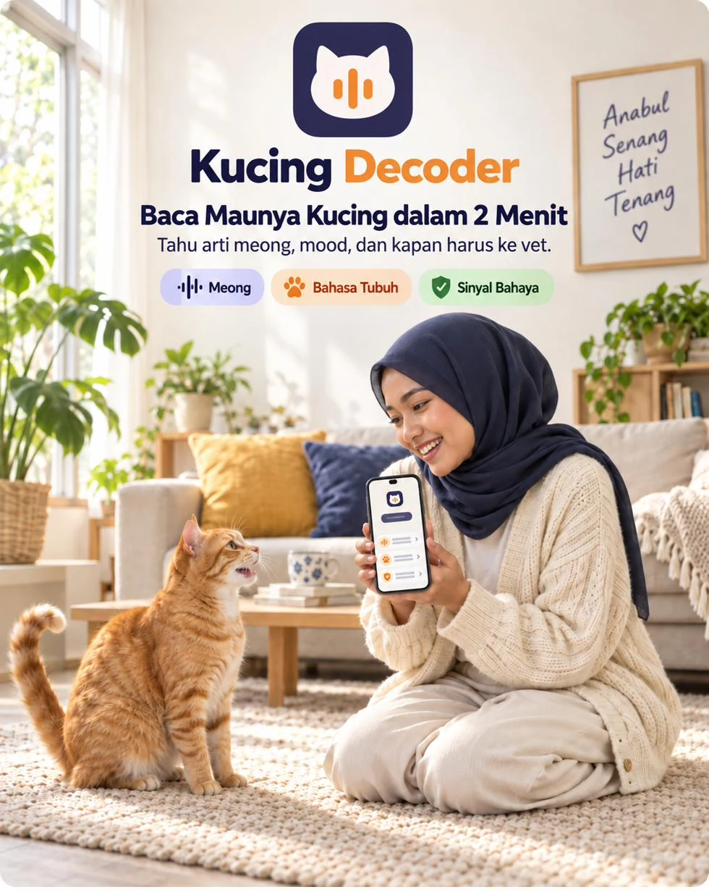
Kucing Decoder adalah aplikasi di HP yang membaca meong, bahasa tubuh, dan gejala anabulmu. Hasilnya: kemungkinan maunya apa, langkah 5 menit yang bisa langsung kamu coba, dan kapan harus ke dokter hewan.
Sekali bayar. Tanpa langganan. Buka dari browser HP, tanpa install.
“Meooong. Meooong.”
Jam 3 pagi. Dia duduk di depan pintu kamar dan meong kencang, berulang-ulang. Kamu bangun, cek mangkuknya, masih ada isinya. Kamu elus, dia tetap meong. Kamu balik tidur sambil mikir, dia kenapa sih?
Kolong kasur, sejak pagi.
Biasanya dia yang pertama nyamperin tiap kamu buka makanan. Hari ini dipanggil gak nongol, makanannya gak disentuh. Kamu buka Google, keluar 12 penyebab. Dari “cuma stres” sampai “segera ke dokter”. Yang mana?
Lagi enak dielus, tiba-tiba nyakar.
Tadi dia sendiri yang naik ke pangkuanmu. Tiga detik kemudian tanganmu sudah baret. Kamu mulai mikir mungkin dia memang galak dari sananya.
Tiga kejadian ini kelihatan beda, tapi masalahnya sama: dia jelas lagi ngomong sesuatu, kamu gak ngerti, dan kamu takut kalau salah nebak ternyata dia sakit.
Lewat suaranya. Lewat badannya: ekor, telinga, mata, postur. Lewat gejalanya: makan, minum, pipis, tingkahnya hari ini.
Selama ini kita cuma nebak dari satu jalur, biasanya suaranya. Padahal meong yang sama bisa berarti lapar, bosan, minta keluar, atau kesakitan. Bedanya ada di jalur yang lain.
Jujur dulu: gak ada aplikasi yang bisa nerjemahin kucing kata per kata. Termasuk yang ini. Yang bisa dibaca adalah polanya: bunyi apa, jam berapa, di mana, badannya lagi gimana, dan apa yang beda dari biasanya.
Itu yang dikerjakan Decoder 3 Lapis:
Membaca jenis bunyi dan konteksnya.
Membaca mood dari ekor, telinga, mata, postur, dan bulu.
Membaca gejala untuk tahu seberapa darurat kondisinya.
Berhenti nebak. Mulai baca.
Nama, umur, steril atau belum, indoor atau sering keluar, makanan utamanya. Dari sini bacaannya disesuaikan dengan kucingmu sendiri, bukan kucing pada umumnya.
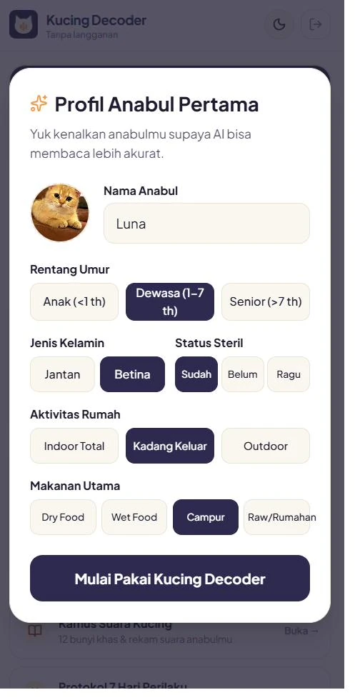
Dia meong? Buka Dengar Meongnya. Mau dielus tapi ragu? Buka Baca Badannya. Kelihatan gak beres? Buka Cek Bahaya.
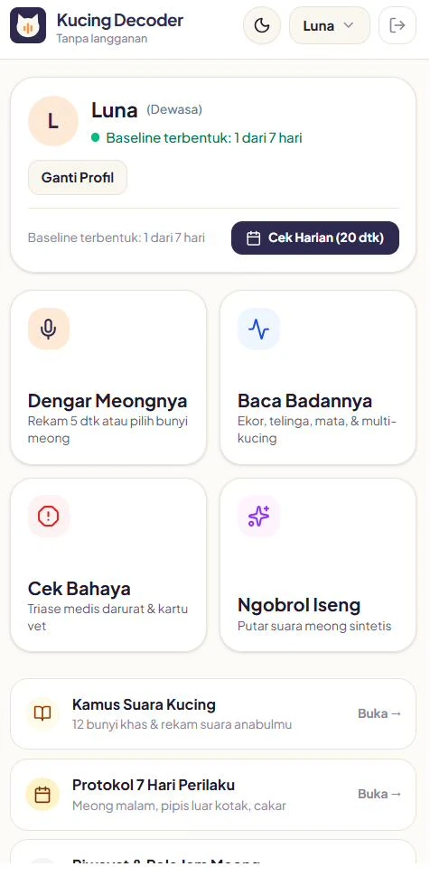
Ketuk gambar untuk memperbesar.
Kemungkinan maunya apa, satu hal yang bisa kamu coba dalam 5 menit, dan tanda kapan ini bukan sekadar cari perhatian.
Jam 02.14, dia meong di depan pintu. Kamu gak perlu nebak sambil setengah tidur.
Rekam suaranya 5 detik, atau pilih jenis bunyinya: pendek berulang, panjang melengking, serak, geraman, dengkuran, atau ratapan malam. Lalu jawab 4 pertanyaan singkat: jam berapa, di mana, sudah makan atau belum, dan badannya lagi gimana.
Hasilnya 3 kemungkinan kebutuhan, diurutkan dari yang paling mungkin. Masing-masing lengkap dengan satu hal yang bisa kamu coba dalam 5 menit.
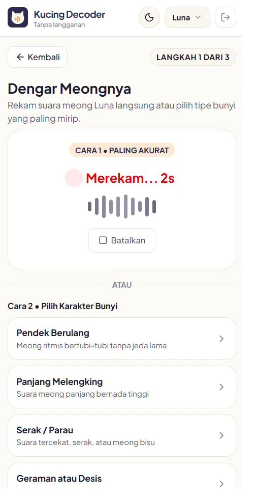
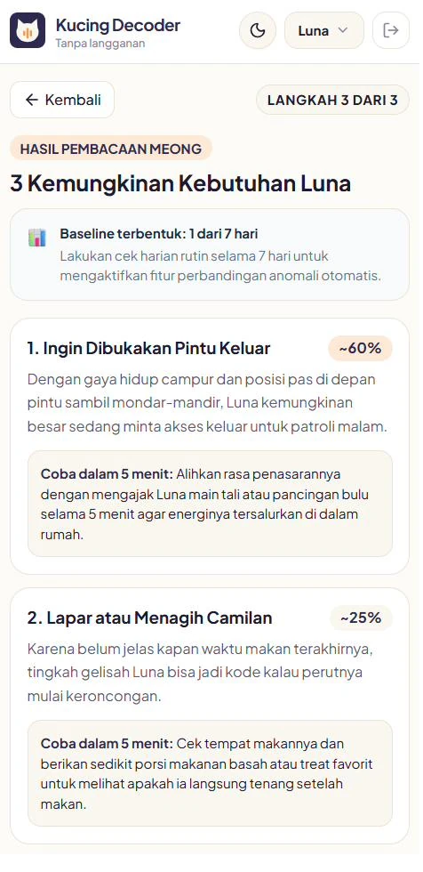
Geser untuk melihat hasilnya.
Mau dielus, tapi takut dicakar? Lihat dulu ekor dan telinganya.
Ketuk posisi ekor, arah telinga, bentuk pupil, postur badan, dan kondisi bulunya. Atau cukup foto anabulnya.
Hasilnya langsung jelas: Aman dipegang atau Biarkan dulu. Ditambah mood-nya saat ini, apa yang terbaca dari tubuhnya, dan satu hal yang sebaiknya kamu lakukan.
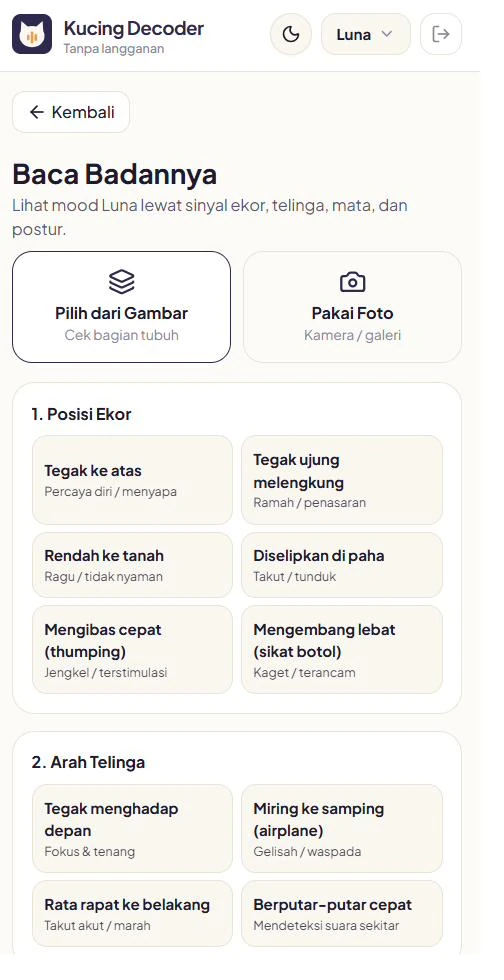
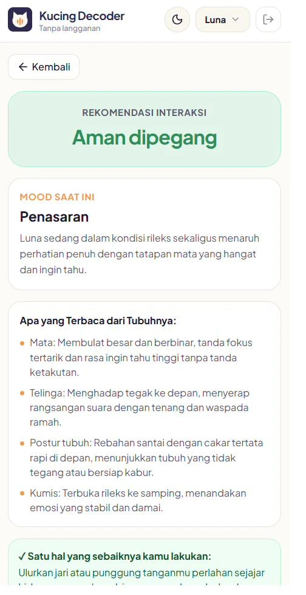
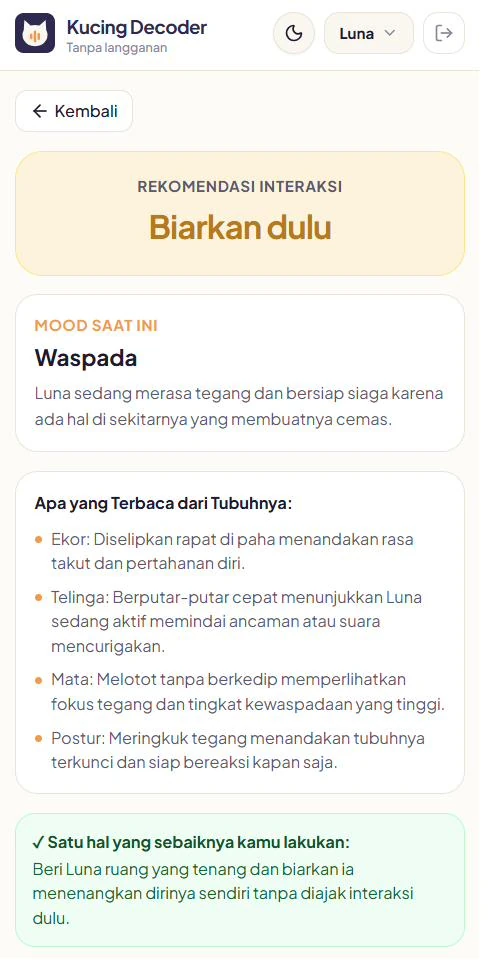
Geser untuk melihat hasilnya.
Dari pagi gak mau makan. Klinik 24 jam, atau tunggu besok?
Centang gejala yang kamu lihat, lalu isi sudah berapa lama gejalanya muncul. Cek Bahaya bantu kamu tahu seberapa darurat kondisi anabulmu: masih bisa dipantau di rumah, atau harus segera ke dokter hewan.
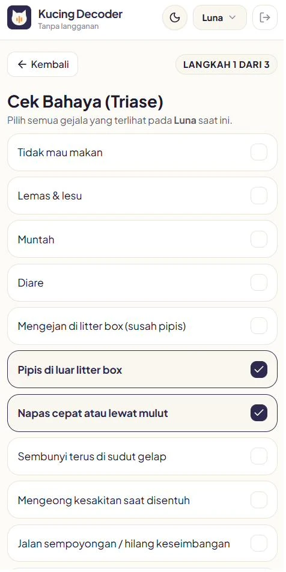
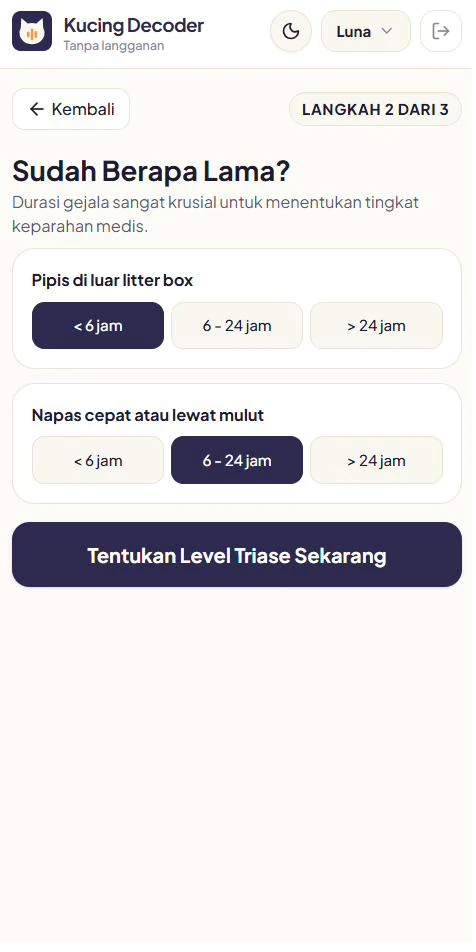
Geser untuk melihat langkah berikutnya.
Makin sering dipakai, makin kenal kucingmu.
Cek Harian cuma 20 detik: porsi makan, minum, pipis dan pup, tingkat aktivitas, dan mood hari ini. Setelah 7 hari, aplikasi punya gambaran “normal”-nya anabulmu, jadi hal yang gak biasa lebih cepat ketahuan.
Di Riwayat, kamu bisa lihat pola jam meongnya selama 14 hari terakhir. Misalnya ternyata dia selalu meong jam 10 malam. Itu bukan sakit, itu jam dia minta ditemani main.
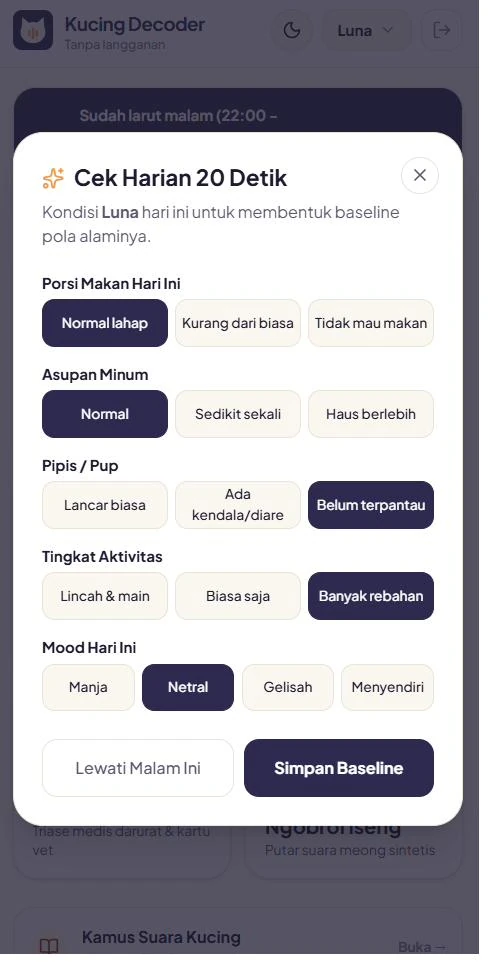
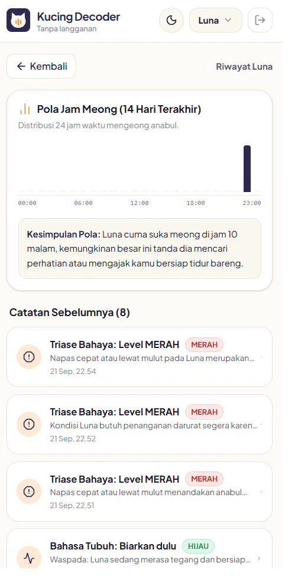
Geser untuk melihat Riwayat.
Untuk masalah yang terus berulang.
Kamus Suara Kucing berisi 12 bunyi khas kucing, lengkap dengan arti umum, konteks yang sering terjadi di rumah Indonesia, dan kapan kamu perlu waspada. Kamu juga bisa merekam versi anabulmu sendiri.
Protokol 7 Hari Perilaku disiapkan untuk tiga masalah yang paling bikin capek: meong malam, pipis di luar litter box, serta gigit dan cakar mendadak. Rencana hariannya menyesuaikan kondisi kucingmu.
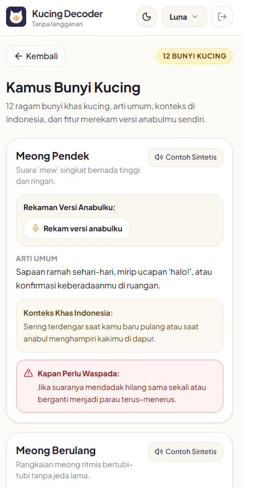
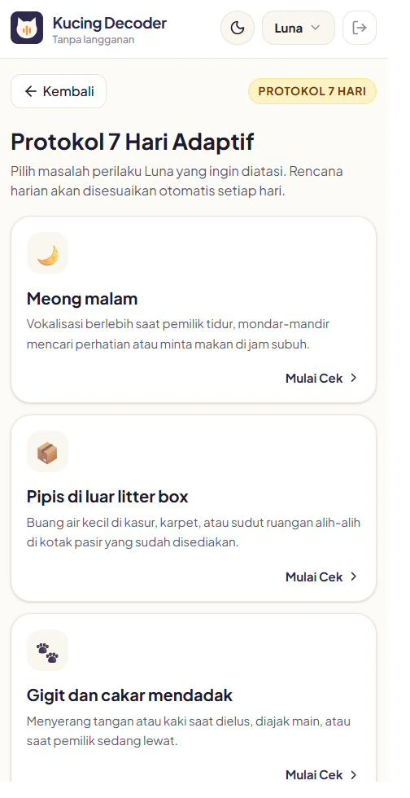
Geser untuk melihat Protokol 7 Hari.
Yang ini buat seru-seruan.
Pilih kalimat seperti “Kamu lapar?” atau “Ayo main!”, atau rekam suaramu sendiri, lalu putar sebagai suara meong ke anabulmu. Ini mode hiburan, bukan terjemahan sungguhan. Tapi reaksi kucingmu biasanya layak direkam.
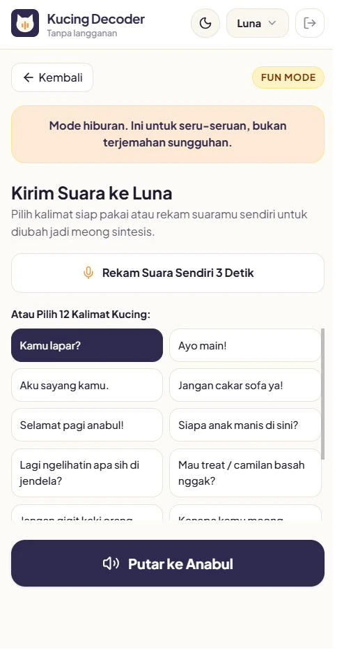
Mode Malam. Antara jam 22.00 sampai 05.00, aplikasi menawarkan Mode Malam. Sekali tap, layarnya jadi gelap, tombolnya besar, dan yang ditampilkan dua fitur yang paling dibutuhkan tengah malam: Dengar Meongnya dan Cek Bahaya.
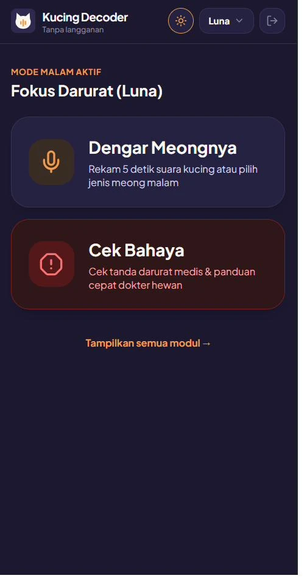
Ketuk gambar untuk memperbesar.
Lebih dari satu kucing. Tiap anabul punya profil, catatan harian, dan riwayatnya sendiri.
Data anabul tersimpan di HP-mu. Mau ganti HP? Simpan cadangannya, lalu pulihkan di HP baru.
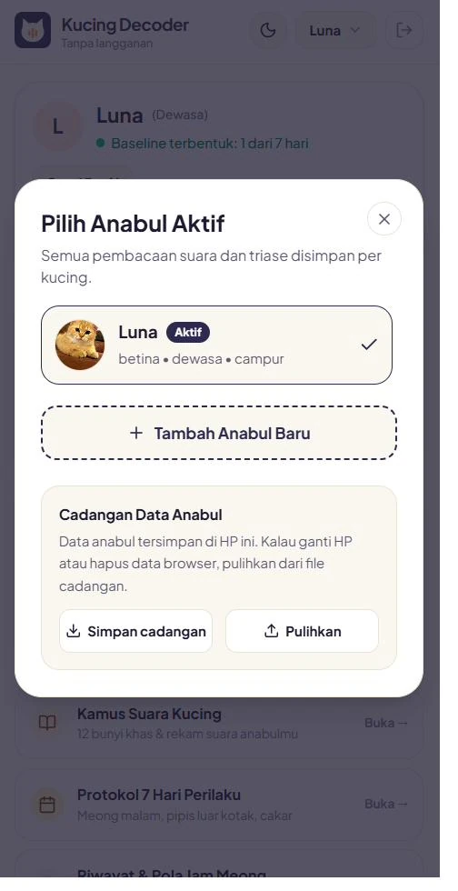
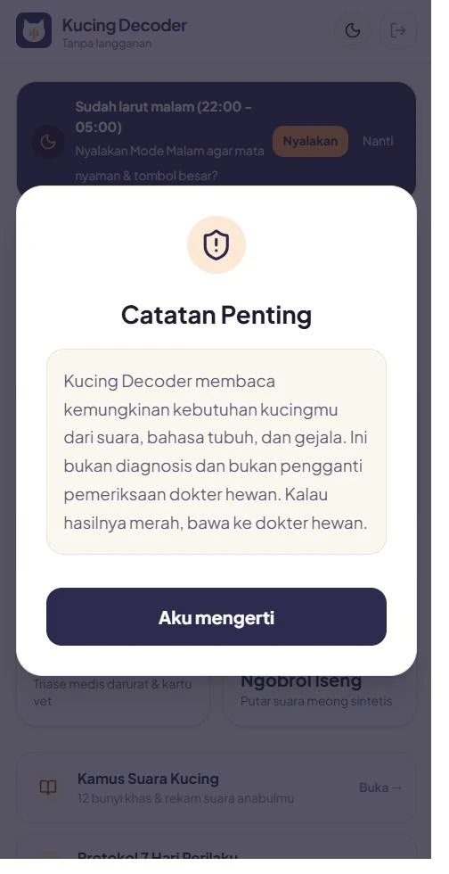
| App penerjemah kucing | Googling artikel | Kucing Decoder | |
|---|---|---|---|
| Cara bayar | Gratis unduh, lalu langganan mingguan atau bulanan | Gratis | Sekali bayar, selamanya |
| Hasilnya | Kalimat lucu | Daftar 12 penyebab | 3 kemungkinan plus langkah 5 menit |
| Sesuai kucingmu | Tidak | Tidak | Ya, dari profil dan kebiasaannya |
| Kapan ke dokter hewan | Tidak dibahas | Kamu simpulkan sendiri | Ada fitur Cek Bahaya |
| Baca bahasa tubuh | Jarang | Harus baca panjang | Ketuk atau foto, langsung ada hasil |
| Jam 2 pagi | Buka, dengar kalimat lucu | Scroll artikel panjang | Mode Malam, 2 tombol utama |
| Konteks lokal | Tidak | Kadang | Konteks khas rumah Indonesia |
Geser untuk melihat cerita lainnya. Nomor disensor untuk menjaga privasi.
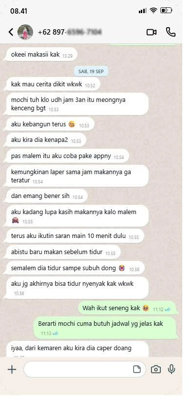
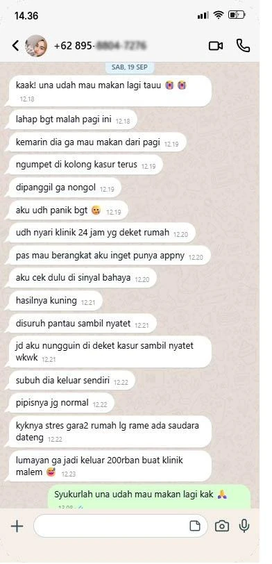
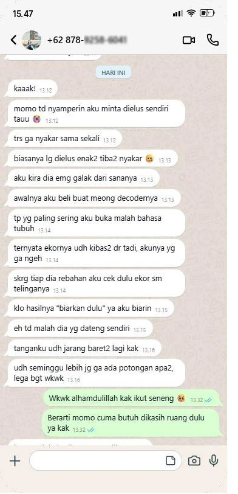
Bulan kedua, kamu sudah lebih hemat. Di tahun pertama, hitungannya kurang dari Rp350 per hari. Setelah itu, gak ada tagihan apa-apa lagi.
Panduan Akses berisi kode masuk dikirim ke email yang kamu pakai saat order.
Bisa pakai QRIS, transfer bank, atau e-wallet.
Begitu pembayaran terkonfirmasi, kamu diarahkan ke halaman sukses Kucing Decoder, dan Panduan Akses berisi kode masuk dikirim ke email kamu. Kalau belum ada di kotak masuk, cek folder Spam atau Promosi.
Buka kucingdecoder.ai.studio, masukkan kode akses dari email, lalu isi profil anabul sekitar 1 menit. Kamu bisa langsung pakai malam ini.
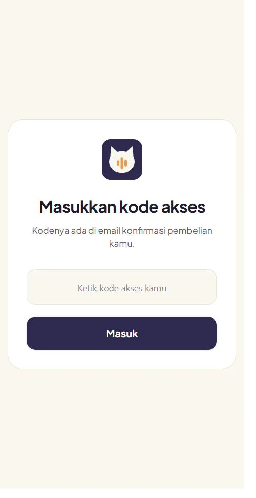
Tanpa bikin akun. Tanpa password.
Malam itu kamu bisa buka Google dan baca 12 kemungkinan. Kamu bisa langsung panik ke klinik 24 jam. Atau kamu bisa tahu dalam 2 menit: dia butuh apa, apa yang bisa kamu coba sekarang, dan apakah ini bisa ditunggu sampai besok.
Kamu sudah sayang sama dia. Yang kurang cuma cara membacanya.
Sekali bayar. Tanpa langganan. Buka dari browser HP, tanpa install.